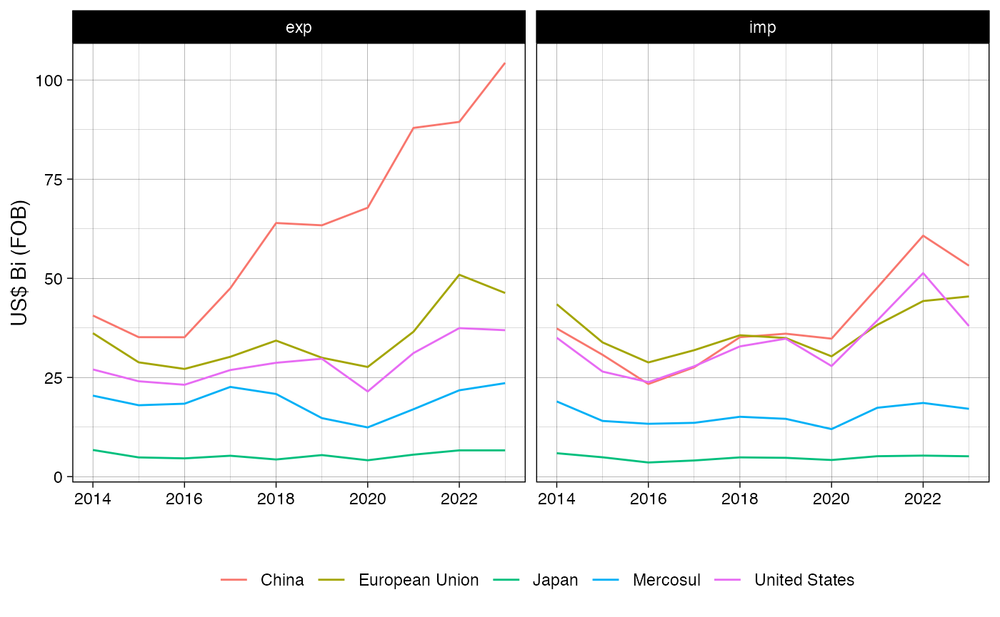
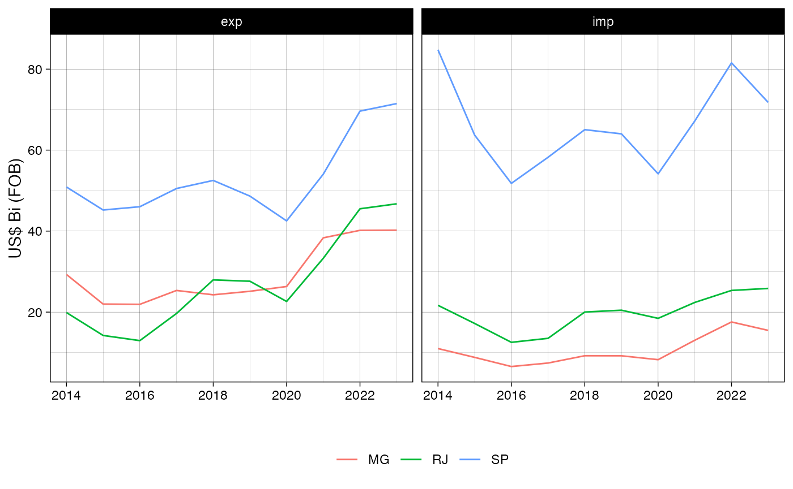
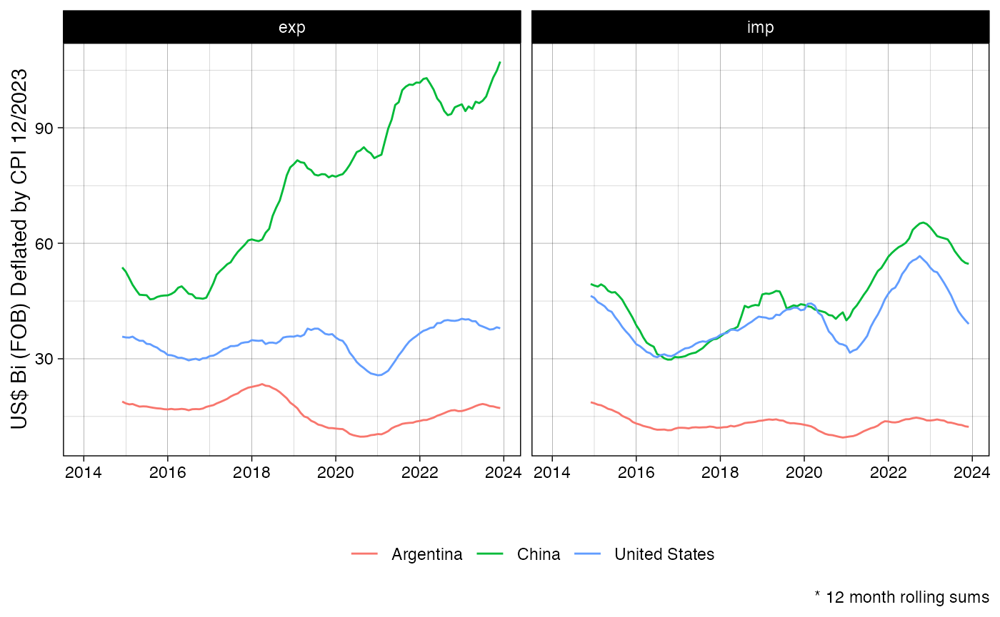
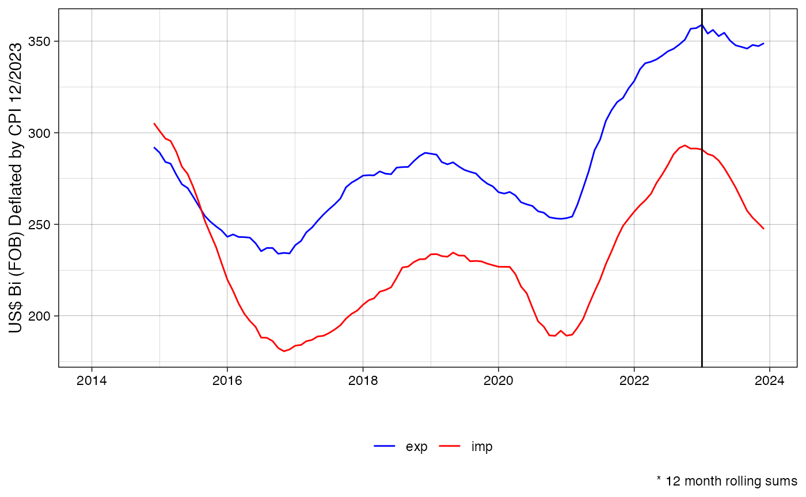
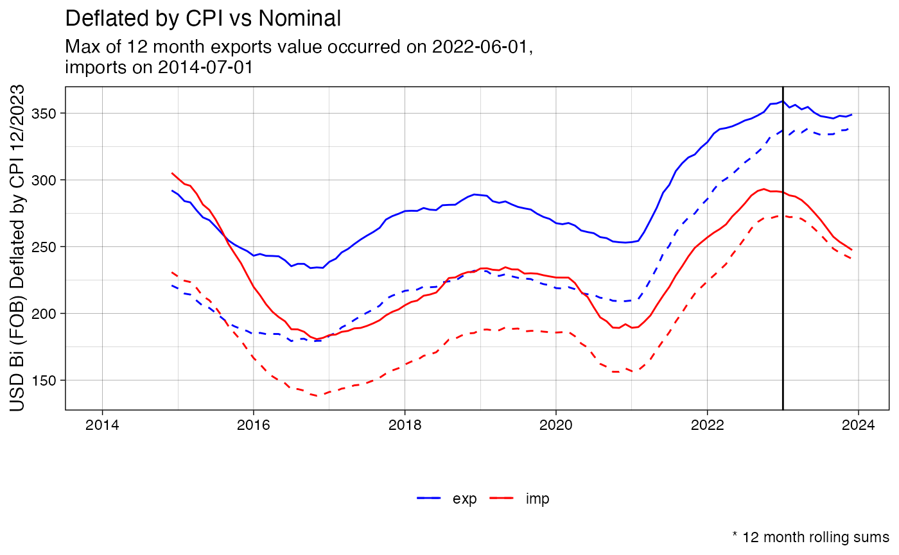
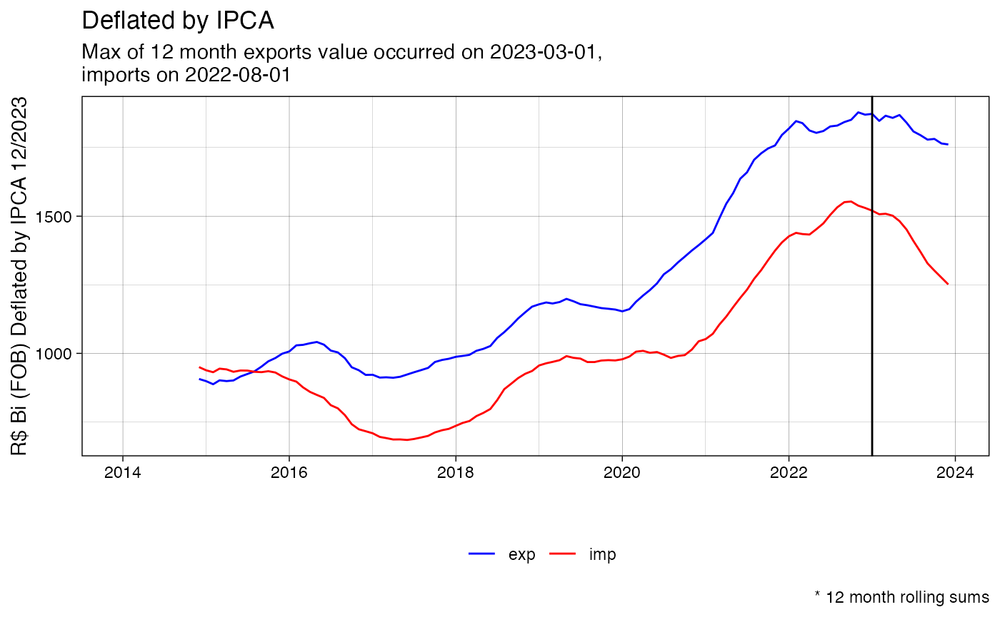
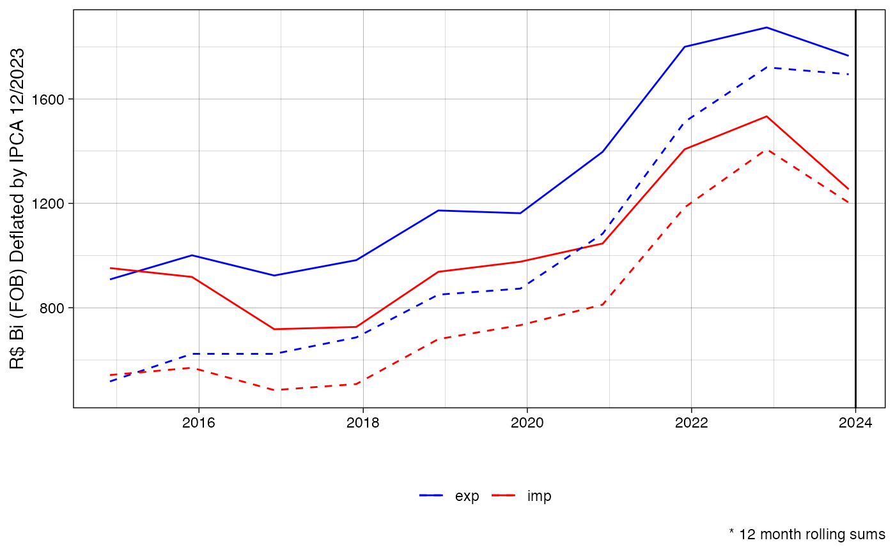
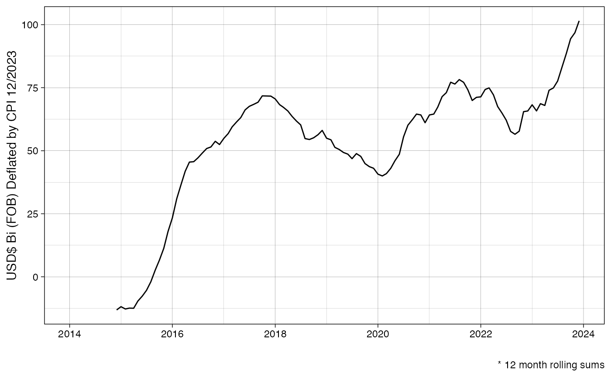
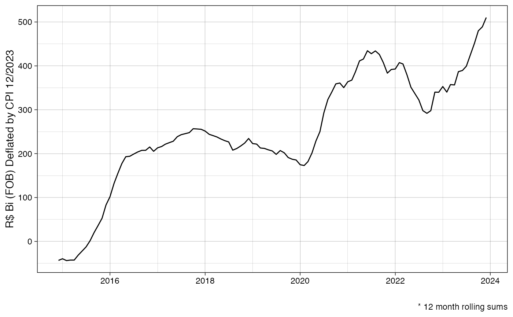
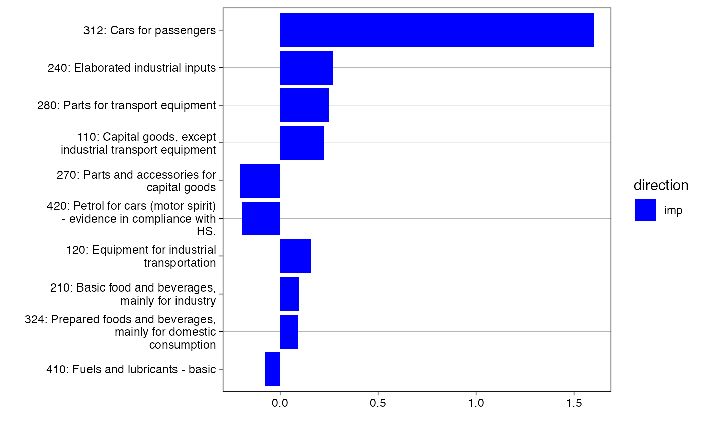

comexr
Easy acess to Brazilian foreign trade statistics using Apache Arrow.
Eduardo Leoni
2024-07-18
Source:vignettes/articles/comexr.Rmd
comexr.RmdThe goal of comexr is to make it easy to download, process, and analyze Brazilian foreign trade statistics, available through the web app http://comexstat.mdic.gov.br/, using the underlying bulk data https://www.gov.br/produtividade-e-comercio-exterior/pt-br/assuntos/comercio-exterior/estatisticas/base-de-dados-bruta.
Installation
##devtools::install_github("leoniedu/comexr")If you have problems installing arrow, see:
Examples
library(comexr)
library(dplyr)
#>
#> Attaching package: 'dplyr'
#> The following objects are masked from 'package:stats':
#>
#> filter, lag
#> The following objects are masked from 'package:base':
#>
#> intersect, setdiff, setequal, union
##downloading
#comex_download(years = 2022:2024, types = "ncm", ssl_verifypeer=FALSE)
if (params$download) {
try(comex_download(years = 2014:2024, types = "ncm"
, ssl_verifypeer=FALSE
))
}
comex_ncm_f <- comex_ncm()|>filter(year>=2014, year<=2023)Automatic downloading can be tricky, due to timeout, (lack of) valid
security certificates on the Brazilian government websites, along other
issues. The code uses the multi_download function from the
curl library, so it resumes download if it fails.
Main trade partners, treating countries in Mercosul and European Union as blocks.
Using a programming language like R makes it easy to generate statistics and reports at the intended level of analysis.
msul <- comex("pais_bloco")|>
filter(block_code==111)|>
pull(country_code)
#> Rows: 322 Columns: 5
#> ── Column specification ────────────────────────────────────────────────────────
#> Delimiter: ";"
#> chr (4): CO_PAIS, NO_BLOCO, NO_BLOCO_ING, NO_BLOCO_ESP
#> dbl (1): CO_BLOCO
#>
#> ℹ Use `spec()` to retrieve the full column specification for this data.
#> ℹ Specify the column types or set `show_col_types = FALSE` to quiet this message.
eu <- comex("pais_bloco")|>
filter(block_code==22)|>
pull(country_code)
#> Rows: 322 Columns: 5
#> ── Column specification ────────────────────────────────────────────────────────
#> Delimiter: ";"
#> chr (4): CO_PAIS, NO_BLOCO, NO_BLOCO_ING, NO_BLOCO_ESP
#> dbl (1): CO_BLOCO
#>
#> ℹ Use `spec()` to retrieve the full column specification for this data.
#> ℹ Specify the column types or set `show_col_types = FALSE` to quiet this message.
pb <- comex("pais")|>
transmute(country_code,
partner=
case_when(country_code%in%msul ~ "Mercosul",
country_code%in%eu ~ "European Union",
TRUE ~ country_name)
)
#> Rows: 281 Columns: 6
#> ── Column specification ────────────────────────────────────────────────────────
#> Delimiter: ";"
#> chr (6): CO_PAIS, CO_PAIS_ISON3, CO_PAIS_ISOA3, NO_PAIS, NO_PAIS_ING, NO_PAI...
#>
#> ℹ Use `spec()` to retrieve the full column specification for this data.
#> ℹ Specify the column types or set `show_col_types = FALSE` to quiet this message.
cstat_top_0 <- comex_ncm_f|>
left_join(pb) |>
group_by(partner)|>
summarise(fob_usd=sum(fob_usd))|>
ungroup() |>
arrange(desc(fob_usd))|>
collect()|>
slice(1:5)
cstat_top <- comex_ncm_f |>
left_join(pb) |>
semi_join(cstat_top_0, by=c("partner"))|>
group_by(year, partner, direction)|>
summarise(fob_usd=sum(fob_usd))|>
collect()
library(ggplot2)
ggplot(aes(x=year,
y=fob_usd_bi),
data=cstat_top|>
mutate(fob_usd_bi=fob_usd/1e9)) +
geom_line(aes(color=partner)) +
facet_wrap(~direction) +
labs(color="", x="", y="US$ Bi (FOB)") +
theme_linedraw() + theme(legend.position="bottom")
Imports and exports by Brazilian state
You will have access to information not available via the web interface http://comexstat.mdic.gov.br/en/home, such as
bystate <- comex_ncm_f |>
group_by(state_abb, year, direction)|>
summarise(fob_usd=sum(fob_usd))|>
collect()
topstate <- bystate|>
group_by(state_abb)|>
summarise(fob_usd=sum(fob_usd))|>
arrange(-fob_usd)|>
head(3)
ggplot(aes(x=year, y=fob_usd_bi, color=state_abb),
data=bystate|>
semi_join(topstate, by="state_abb")|>
mutate(fob_usd_bi=fob_usd/1e9)) +
geom_line() +
facet_wrap(~direction) +
labs(color="", x="", y="US$ Bi (FOB)") +
theme_linedraw() + theme(legend.position="bottom")
Deflate using CPI (for USD) or IPCA (for BRL) (Experimental)
selected_deflated <- comex_ncm_f%>%
filter(country_code%in%c(249, 160, 63))%>%
group_by(direction, date, country_code)%>%
comex_sum()|>
comex_deflate()%>%
collect()
selected_deflated_r <- selected_deflated%>%
left_join(comex("pais"))%>%
group_by(direction, country_name)%>%
arrange(date)%>%
filter(!is.na(fob_usd))%>%
comex_roll(x = c("fob_usd_deflated"))
#> Rows: 281 Columns: 6
#> ── Column specification ────────────────────────────────────────────────────────
#> Delimiter: ";"
#> chr (6): CO_PAIS, CO_PAIS_ISON3, CO_PAIS_ISOA3, NO_PAIS, NO_PAIS_ING, NO_PAI...
#>
#> ℹ Use `spec()` to retrieve the full column specification for this data.
#> ℹ Specify the column types or set `show_col_types = FALSE` to quiet this message.
#> Joining with `by = join_by(country_code)`
ggplot(aes(x=date, y=fob_usd_deflated_12/1e9, color=country_name),
data=selected_deflated_r)+
facet_wrap(~direction)+
geom_line() +
labs(color="", x="", y="US$ Bi (FOB) Deflated by CPI "%>%paste0(format(max(selected_deflated_r$date), "%m/%Y")), caption = "* 12 month rolling sums") +
theme_linedraw() + theme(legend.position="bottom") #+ scale_color_manual(values=c("red", "blue"))
#> Warning: Removed 33 rows containing missing values or values outside the scale range
#> (`geom_line()`).
Trade balance
balance_deflated <- comex_ncm_f%>%
group_by(direction, date)%>%
comex_sum()%>%
comex_deflate()%>%
comex_roll(x = c("fob_brl", "fob_usd", "fob_usd_deflated", "fob_brl_deflated", "cif_usd_deflated", "cif_brl_deflated"))%>%
collect()
# volume_deflated_r <- balance_deflated%>%
# group_by(date)%>%
# summarise(across(matches("^(fob|cif|qt)"), sum))
ggplot(aes(x=date, y=fob_usd_deflated_12/1e9, color=direction),
data=balance_deflated) +
scale_color_manual(values=c("blue", "red")) +
geom_line() +
labs(color="", x="", y="US$ Bi (FOB) Deflated by CPI "%>%paste0(format(max(selected_deflated_r$date), "%m/%Y")), caption = "* 12 month rolling sums") +
theme_linedraw() +
geom_vline(xintercept=as.Date("2023-01-01"))+
theme(legend.position="bottom") #+ scale_color_manual(values=c("red", "blue"))
#> Warning: Removed 22 rows containing missing values or values outside the scale range
#> (`geom_line()`).
usdmax <- balance_deflated%>%
group_by(direction)%>%
arrange(desc(fob_usd_deflated/1e9))%>%
slice(1)
ggplot(aes(x=date, y=fob_usd_deflated_12/1e9, color=direction),
data=balance_deflated) +
geom_line(aes(y=fob_usd_12/1e9), linetype=2) +
scale_color_manual(values=c("blue", "red")) +
geom_line() +
#geom_line(aes(y=vl_fob_usd_bi), linetype='dashed')+
labs(color="", x="", y="USD Bi (FOB) Deflated by CPI "%>%paste0(format(max(selected_deflated_r$date), "%m/%Y")), caption = "* 12 month rolling sums", title="Deflated by CPI vs Nominal",
subtitle = glue::glue("Max of 12 month exports value occurred on {usdmax%>%filter(direction=='exp')%>%pull(date)},\n imports on {usdmax%>%filter(direction=='imp')%>%pull(date)}")) +
theme_linedraw() +
geom_vline(xintercept=as.Date("2023-01-01"))+
theme(legend.position="bottom") #+ scale_color_manual(values=c("red", "blue"))
#> Warning: Removed 22 rows containing missing values or values outside the scale range
#> (`geom_line()`).
#> Removed 22 rows containing missing values or values outside the scale range
#> (`geom_line()`).
brlmax <- balance_deflated%>%
group_by(direction)%>%
arrange(desc(fob_brl_deflated/1e9))%>%
slice(1)
ggplot(aes(x=date, y=fob_brl_deflated_12/1e9, color=direction),
data=balance_deflated) +
scale_color_manual(values=c("blue", "red")) +
geom_line() +
#geom_line(aes(y=vl_fob_usd_bi), linetype='dashed')+
labs(color="", x="", y="R$ Bi (FOB) Deflated by IPCA "%>%paste0(format(max(selected_deflated_r$date), "%m/%Y")), caption = "* 12 month rolling sums", title="Deflated by IPCA",
subtitle = glue::glue("Max of 12 month exports value occurred on {brlmax%>%filter(direction=='exp')%>%pull(date)},\n imports on {brlmax%>%filter(direction=='imp')%>%pull(date)}")) +
theme_linedraw() +
geom_vline(xintercept=as.Date("2023-01-01"))+
theme(legend.position="bottom") #+ scale_color_manual(values=c("red", "blue"))
#> Warning: Removed 22 rows containing missing values or values outside the scale range
#> (`geom_line()`).
Last month
ggplot(aes(x=date, y=fob_brl_deflated_12/1e9, color=direction),
data=balance_deflated%>%filter(lubridate::month(date)==lubridate::month(max(balance_deflated$date)))
) +
scale_color_manual(values=c("blue", "red")) +
geom_line() +
geom_line(aes(y=fob_brl_12/1e9), linetype='dashed') +
#geom_point(aes(y=fob_brl_bi), linetype='dashed') +
labs(color="", x="", y="R$ Bi (FOB) Deflated by IPCA "%>%paste0(format(max(selected_deflated_r$date), "%m/%Y")), caption = "* 12 month rolling sums") +
theme_linedraw() +
geom_vline(xintercept=as.Date("2024-01-01"))+
theme(legend.position="bottom") #+ scale_color_manual(values=c("red", "blue")) 
ggplot(aes(x=date, y=balance_usd_deflated_12),
data=
balance_deflated%>%
group_by(date)%>%
arrange(desc(direction))%>%
summarise(balance_usd_deflated_12=fob_usd_deflated_12[2]/1e9-fob_usd_deflated_12[1]/1e9))+
#scale_color_manual(values=c("blue", "red")) +
geom_line() +
labs(color="", x="", y="USD$ Bi (FOB) Deflated by CPI "%>%paste0(format(max(selected_deflated_r$date), "%m/%Y")), caption = "* 12 month rolling sums") +
theme_linedraw() +
theme(legend.position="bottom") #+ scale_color_manual(values=c("red", "blue"))
#> Warning: Removed 11 rows containing missing values or values outside the scale range
#> (`geom_line()`).
BRL
ggplot(aes(x=date, y=balance_brl_deflated_12),
data=
balance_deflated%>%
group_by(date)%>%
arrange(desc(direction))%>%
summarise(balance_brl_deflated_12=fob_brl_deflated_12[2]/1e9-fob_brl_deflated_12[1]/1e9)%>%
na.omit()
)+
#scale_color_manual(values=c("blue", "red")) +
geom_line() +
labs(color="", x="", y="R$ Bi (FOB) Deflated by CPI "%>%paste0(format(max(selected_deflated_r$date), "%m/%Y")), caption = "* 12 month rolling sums") +
theme_linedraw() +
theme(legend.position="bottom") #+ scale_color_manual(values=c("red", "blue")) 
By CGCE
by_cat_0 <- comex_ncm() |>
filter(date>="2022-01-01")%>%
filter(## usa
#country_code==249
## china
#country_code==160
) |>
left_join(ncms()%>%select(ncm=co_ncm,
name=no_cgce_n3_ing, code=co_cgce_n3
#name=no_ncm_ing, code=co_ncm
))|>
group_by(name,code, direction, date)|>
comex_sum()|>
comex_deflate()%>%
filter(!is.na(fob_brl_deflated))
by_cat_1 <- by_cat_0%>%
filter(direction=="imp")%>%
group_by(name,code, direction)|>
comex_roll(k=1)%>%
rename_with(function(x) gsub("_1$", "_k", x))%>%
ungroup%>%
filter(lubridate::month(date)==lubridate::month(max(date)))%>%
mutate(year=lubridate::year(date))%>%
filter(year>=(max(year)-1))%>%
mutate(year=factor(year,labels = c("last", "current")))
by_cat_2 <- by_cat_1%>%
select(name,code, direction, fob_usd_deflated_k, year)%>%
tidyr::pivot_wider(names_from=c("year"), values_from = fob_usd_deflated_k)%>%
mutate(current=tidyr::replace_na(current, 0),
last=tidyr::replace_na(last, 0),
d=current-last, s=last+current, p=current/last)
by_cat <- by_cat_2%>%
group_by(code)%>%
summarise(total=sum(abs(current-last)))%>%
arrange(desc(total))%>%
head(10)%>%
inner_join(by_cat_2)%>%
arrange(total)
#> Joining with `by = join_by(code)`
ggplot(aes(y=label, x=d/1e9, fill=direction), data=by_cat%>%mutate(label=forcats::fct_inorder(paste0(code, ": ", stringr::str_wrap(name,30))))) + geom_col(position="dodge")+ labs(x="", y="") +
scale_fill_manual(values=c("blue", "red")) +
theme_linedraw()